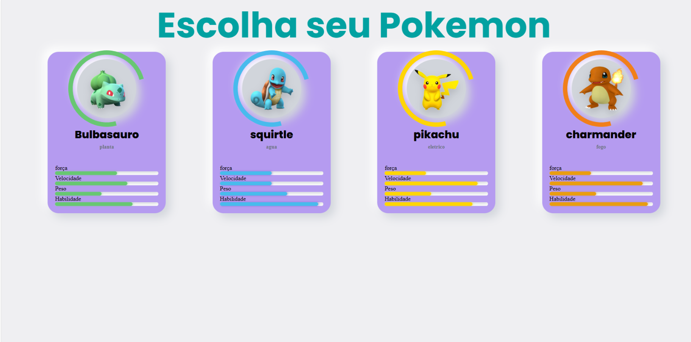
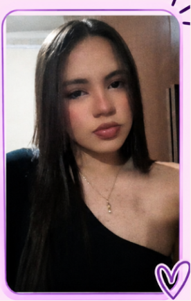
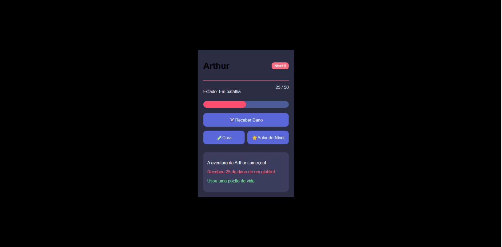
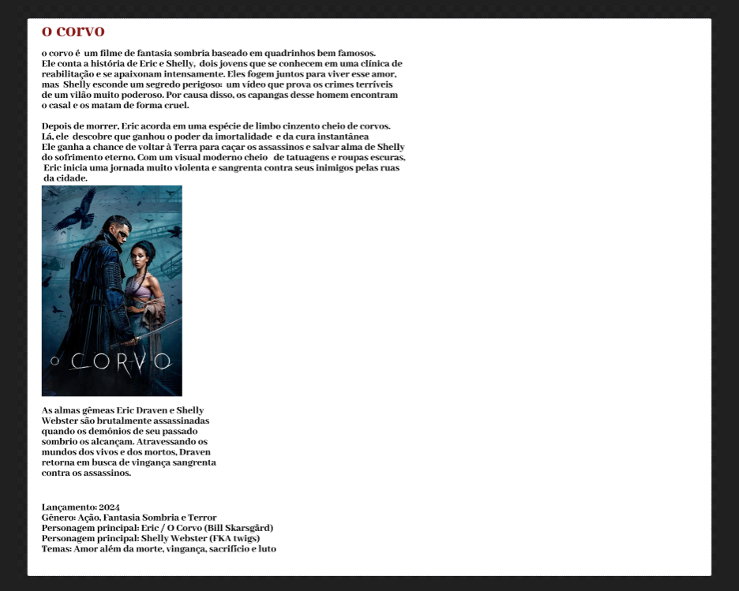
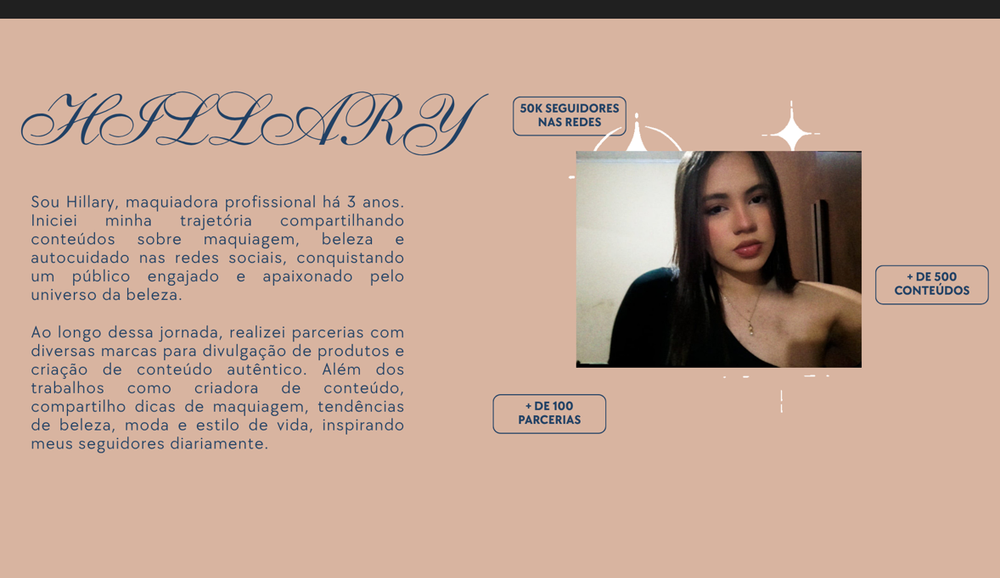
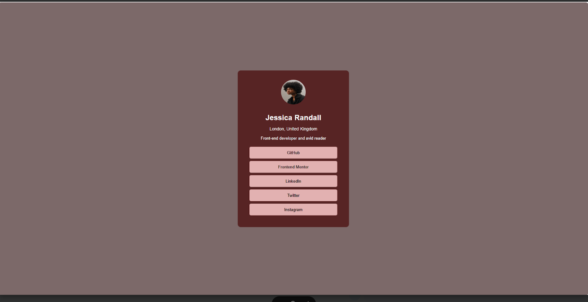
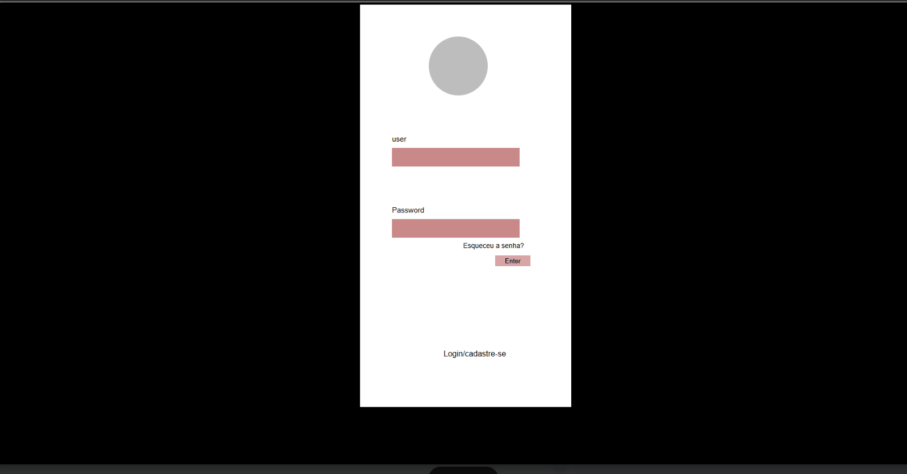

Pokemon
O projeto foi desenvolvido com foco na organização visual, estilização dos componentes e experiência do usuário. Tecnologias: HTML e CSS. JavaScript, caso tenha sido utilizado no projeto.
View Project
Meu nome é Hillary. Sou uma pessoa muito sorridente, gosto de dançar e de escutar música. Sou um pouco vergonhosa no começo, mas, quando conheço melhor as pessoas, vou me soltando e mostrando quem realmente sou. Gosto de ser eu mesma, não mudo meu jeito de ser para agradar ninguém, pois acredito que cada pessoa tem sua própria essência. Tenho sonhos e objetivos que desejo realizar no futuro. Um dos meus maiores sonhos é me tornar uma maquiadora profissional e ter meu próprio espaço de maquiagem, onde eu possa trabalhar com aquilo que amo. Sei que, para ser maquiadora, não é obrigatório ter uma faculdade, mas é muito importante buscar conhecimento, desenvolver técnicas, praticar bastante e também aprender a administrar meu próprio negócio. Sei que, para realizar esse sonho, precisarei de dedicação, esforço e persistência. Quero crescer profissionalmente, conquistar minha independência e ter orgulho de tudo aquilo que conseguir construir. Acredito que, com fé, força de vontade e determinação, sou capaz de realizar meus sonhos. Essa sou eu, Hillary: uma menina sorridente, de personalidade própria, cheia de sonhos e com muita vontade de conquistar meu futuro!

Tecnologia da Informação (TI), Informática e Desenvolvimento Web, Tenho experiências em atividades relacionadas à tecnologia e informática, utilizando ferramentas como VSCode, Figma e BR Modelo
Tenho conhecimentos básicos em HTML, e CSS, utilizados na criação e estilização de páginas. Possuo certificados de conclusão do 9º ano e de um curso no qual aprendi a criar uma conta no YouTube. Estou sempre disposta a aprender coisas novas e desenvolver minhas habilidades.
O projeto foi desenvolvido com foco na organização visual, estilização dos componentes e experiência do usuário. Tecnologias: HTML e CSS. JavaScript, caso tenha sido utilizado no projeto.
View Project
Criação de uma interface de personagem RPG, com informações como nome, nível, pontos de vida e habilidades, trabalhando a organização e a apresentação dos dados. Tecnologias: HTML, CSS e C#.
View Project
Desenvolvi uma página web informativa sobre o filme O Corvo (2024), utilizando HTML para organizar textos, sinopse, imagens e informações sobre o filme. Com esse projeto, pratiquei a estruturação de páginas e a inserção de imagens, aprimorando meus conhecimentos em desenvolvimento web.
View Project
Desenvolvi uma página de apresentação profissional para uma maquiadora, utilizando HTML e CSS para organizar informações, imagens, cores e fontes. O projeto destaca sua trajetória, parcerias, conteúdos e conquistas nas redes sociais, com um visual elegante e profissional.
View Project
Eu desenvolvi uma página de perfil com links para redes sociais. Utilizei HTML para criar a estrutura da página e CSS para estilizar, escolhendo as cores, organizando os elementos e criando os botões. A ideia foi deixar todas as redes sociais reunidas em um único lugar, de forma simples e organizada
View Project
Desenvolvi uma página de login e cadastro de usuários, com campos para nome e senha, opção de recuperar senha e botão de acesso. Utilizei HTML para estruturar a página e CSS para personalizar o visual. Com esse projeto, aprimorei meus conhecimentos em criação de interfaces e desenvolvimento web.
View Project